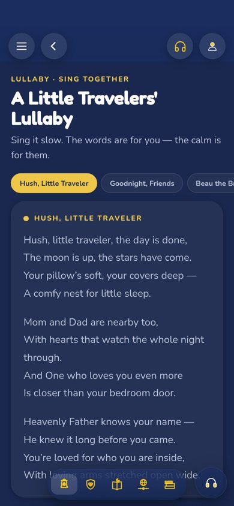
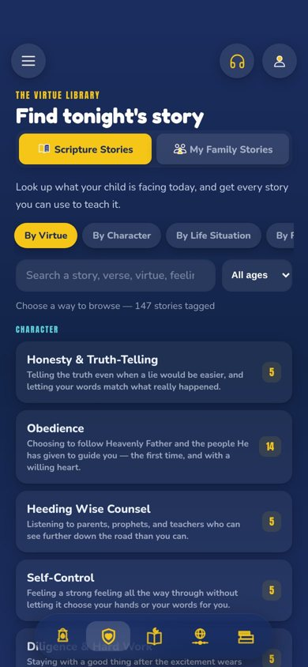

Tap the headphones on any Little Scripture Travelers story and a warm voice reads it to your child, one page at a time. As each word is said, that one word lights up gold and is underlined, so little eyes follow the words, not only the pictures.



Prefer your phone? Get the iPhone app
Young children listening to a story look almost only at the pictures. Studies that track children’s eyes have found that when the words are highlighted as they are read, preschoolers look at the print noticeably longer (Skibbe and colleagues, 2018), and that children look at print far more when a grown-up points it out (Justice, Pullen & Pence, 2008). A review of 43 studies of narrated storybooks found a small extra boost to story understanding and vocabulary, as long as the books avoided distracting games and pop-ups (Takacs, Swart & Bus, 2015). Children who are beginning to read have recognized more words after watching captioned stories (Linebarger, 2001).
What it is not: highlighting on its own does not teach a three-year-old to read. The gains in the research come from hearing stories again and again, and most of all from a grown-up reading along. So think of it as a helper for reading together, not a replacement for it. That is why our stories have no games or pop-ups, just the story, the pictures and a calm voice.
Also see: Come, Follow Me for kids · Bible stories for kids · LDS parenting · Christian parenting · Homeschool Bible stories · Scripture study for parents · Kids and technology by age · Family history for kids · Teaching kids virtues · Bible coloring pages · Come, Follow Me printables · Bible quiz and flashcards · Emotional regulation for kids · Family scrapbook
On its own, no app teaches a young child to read. Research shows highlighting the words as they are read helps children look at the words, and narrated stories can give a small boost to understanding and vocabulary, especially when a grown-up reads along and stories are heard again and again.
Yes. The reading speed goes from 0.5x to 2x, and the highlighted word keeps pace.
Yes. Light up each word can be switched on or off, and the story still turns its pages with the voice.
The stories are written for children ages one to five, in the smallest words that still carry the meaning.
The first 7 days are free. After that it is $6.99 a month or $49 a year, and you can cancel anytime.